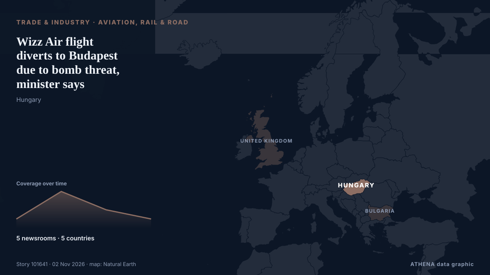

Авиа, ж/д и дороги
СпонсорПри поддержке  Cybernetics and Artificial Intelligence Lab Welcome to the Cybernetics and Artificial Intelligence Laboratory, established at the Department of Business Administration of the National
Cybernetics and Artificial Intelligence Lab Welcome to the Cybernetics and Artificial Intelligence Laboratory, established at the Department of Business Administration of the National
| 20 окт. | 0 |
|---|---|
| 21 окт. | 0 |
| 22 окт. | 0 |
| 23 окт. | 0 |
| 24 окт. | 0 |
| 25 окт. | 0 |
| 26 окт. | 1 |
| 27 окт. | 1 |
| 28 окт. | 3 |
| 29 окт. | 2 |
| 30 окт. | 6 |
| 31 окт. | 1 |
| 1 нояб. | 6 |
| 2 нояб. | 4 |
Заголовки приводятся на английском языке, как они были опубликованы.

Wizz Air flight diverts to Budapest due to bomb threat, minister says
A Wizz Air flight from London to Sofia was diverted to Budapest airport on Monday after receiving a bomb threat, Hungarian Defence Minister Romulusz Ruszin-Szendi said in a Facebook post. из Cyprus Mail
SIA plane tilts during Perth landing attempt amid strong winds, pilots perform go-around
At one point, the SIA plane tilted noticeably, with one wing appearing to come close to the ground. из CNA (Channel NewsAsia)
Armenia has effectively begun implementing TRIPP project, Pashinyan says
The Government of Armenia has effectively already begun implementing the “Trump Route for International Peace and Prosperity” (TRIPP) project, Prime Minister Nikol Pashinyan told lawmakers on Monday… из AzerNews
Japan introduces new tax refund system for foreign tourists to curb illegal resales
A new consumption tax exemption system for foreign visitors to Japan took effect Nov. из Mainichi (English)
Malaysia Airlines says customers may be affected by Amadeus breach
The incident may have affected information processed between August 2023 and September 2026, the airline said on Sunday (Nov 1). из CNA (Channel NewsAsia)
Mwinyi promotes trade, tourism in South Korea
SOUTH KOREA: ZANZIBAR President Dr Hussein Mwinyi has launched Tanzanite magazine, a new publication aimed at showcasing Tanzania’s investment, trade and tourism opportunities to South Korean… из Daily News
Serbians mark railway disaster that led to rise of victorious student movement
Protesters saw the collapse as symptomatic of corruption under former president Vucic. из The Straits Times
Selma Blair says she is ‘so sorry’ in first comments since flight incident
Blair pleaded not guilty to state charges for allegedly kicking a nurse and a police officer. из Evening Standard (London)
Met Office heavy fog warning across all of London as weather causes travel disruption today
The weather experts are advising to prepare for traffic delays because of the heavy fog and those flying should also plan for delayed or cancelled flights. из MyLondon
Ryanair responds to Kumar Sangakkara’s allegation
Ryanair has responded to Sri Lankan cricket legend Kumar Sangakkara, who accused the airline, following an incident involving the airline’s gate staff at Dublin Airport. из Daily Mirror
Tinubu arrives in Saudi Arabia for Umrah
Before leaving, President Tinubu is expected to inaugurate some equipment acquired by the Nigerian Air Force for its operations. из Channels TV
A tale of two Chinas
China’s economy is deeply unbalanced, with a battered real-estate sector, weak consumption, and stark regional disparities coexisting with dynamic tech and export sectors. из Project Syndicate
Jet2 flight forced to divert after declaring mid-air emergency
The flight from Greece was forced to stop early in Croatia, with passengers told to disembark and wait for a replacement aircraft to take them home. из Irish Mirror
Dubai flight cancellation extended until Feb 28 amid Middle East tensions; full refund for affected customers
SINGAPORE: Singapore Airlines (SIA) has extended the cancellation of its Dubai flights by almost three months, leaving passengers without the two services until February 28, 2027. из The Independent Singapore
Inside Spain: Fatal catastrophes appear to be happening too often
On the eve of the second anniversary of Valencia’s devastating floods, the country was rattled by its second major train collision this year. из The Local Spain
Pres. Pezeshkian condoles Spain over deadly train collision
Emergency services combed through the wreckage at night to find further victims. из The Straits Times
US orders non-emergency staff to leave Saudi Arabia over security risks
Oct 30 (Reuters) - The United States ordered non-emergency government employees and their family members to leave Saudi Arabia effective October 23 due to safety risks, the US embassy in Riyadh said… из Al-Monitor